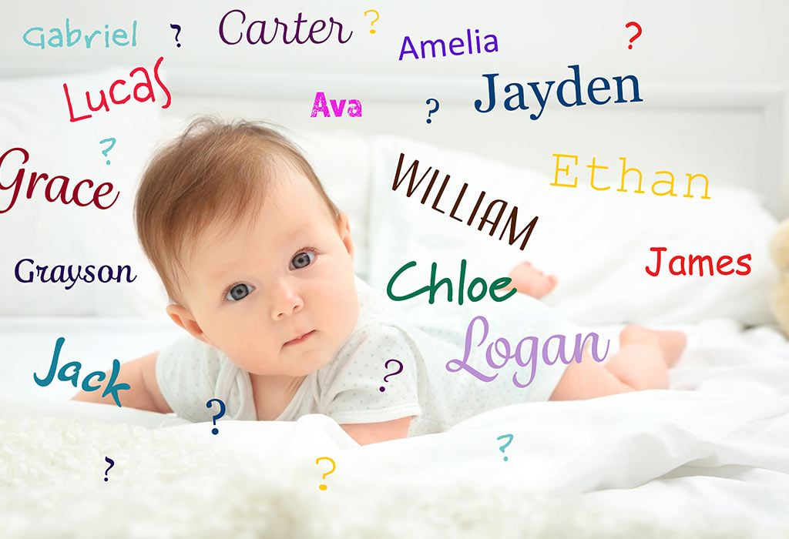

1 / 4

In an ancient Public Bath
2 / 4

In Damascus Old City
3 / 4

My classroom where I used to have a lot of students
4 / 4

In old Damascus house
I am Fatima Grly, I come from a very beautiful country – Damascus, Syria. I was born on the 1st of Oct 1988. Talking about coding, this brings me back to 2007, that time I was doing my high school. I had to do a full website on HTML as my Computer subject-year end project. That time I didn’t have a computer in my house, so I had to stay in my auntie’s house for 1 week to finish my project, to me it was really interesting, I was able to stay all nights long, nonstop doing it, and I never felt bored or tired, I had completed my website which was talking about Oceans. After finishing my high school, I totally forgot about my interest and passion about coding and computer science. That time I couldn’t register in any university, even though I didn’t stop from improving myself, I started English self-study and after a while I started working as an English teacher for kids in a language center in addition of continuing my English lessons. In 2 years’ time I become a good teacher with many courses running. I saved some money to register for a University, and I did! I started my university in 2010 “Business Management”. After the war in Syria has started, I was unable to continue my studies. In the end of 2013, I moved to Malaysia. Getting back to coding… After I attended the recode workshop, I felt that this is the sign I was waiting for, this is what I should be doing, this was my Passion long ago, but it was buried, NOW it’s time for it to get back to life! I really thank you for the opportunity you all have given me to discover my passion back.
Talking a bit about myself usually brings me the topic of my beloved country which I would like to share with you some of the special pictures for me in Syria. Hope you like it.

Before you have a baby, it's impossible to imagine the highs you'll feel -- what can match seeing that big, toothless grin or watching him take those first wobbly steps? But it's just as hard to conceive of how stressful raising kids can be -- the worry, the fatigue, and the occasional pang over your lost freedom. The truth is, staying in good spirits with a little one at home can take some effort. But it's well worth it: Your happiness is not only vital for your own body and soul, but for your baby's too. In fact, one of the best ways to raise happy children is to model happiness ourselves, says Christine Carter, Ph.D., sociologist and author of Raising Happiness. So how do you find your bliss amid diapers and dirty dishes? First, try to recognize the humor in the ridiculousness. Research shows that laughter can relieve stress by "resetting" your nervous systems. And employ a few (or all!) of these proven pick-me-ups to stay on the sunny side of mommyhood.
